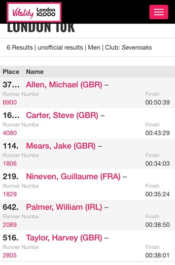
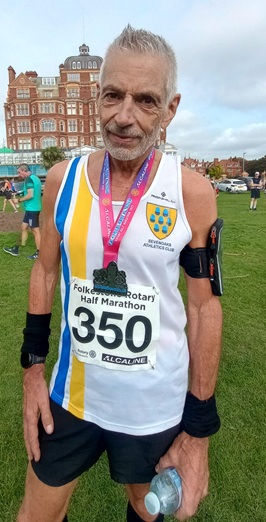
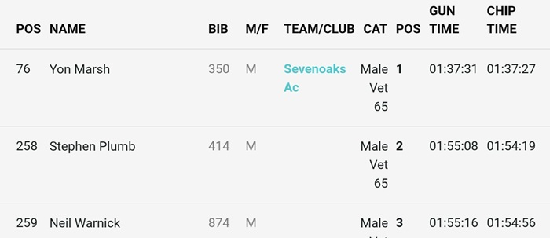
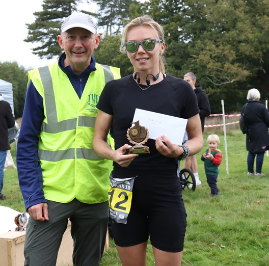

Si

Six SAC runners took part in the Vitality London 10k and recorded some impressive times in the capital, with Jake Mears (above) leading the SAC runners (see left) home in just over 34 minutes.
All the results from London are here.
At the same time, Yon Marsh was first M65 in his first half marathon at Folkestone:


The full results from Folkestone are here.

And there was a big medal haul for the club from the famously tough Eridge 10 near Tunbridge Wells.
Andrea Berquez (left) was the emphatic women's winner, while Keith Dowson was 1st M60, Sally Shewell was 1st W65 and Heather Fitzmaurice 2nd W55.
Photos from the Eridge 10 are here.
The full results from the race are here.
The SAC results were:
| Pos | Name | Bib | M/F | Team/club | Cat | Pos | Gun time | Chip time |
|---|---|---|---|---|---|---|---|---|
| 12 | Andrea Berquez | 212 | F | Female Vet 35 | 1 | 01:20:08 | 01:20:08 | |
| 14 | Keith Dowson | 94 | M | Sevenoaks Ac | Male Vet 60 | 1 | 01:21:04 | 01:21:04 |
| 34 | Daniel Witt | 200 | M | Sevenoaks Ac | Male Vet 50 | 5 | 01:28:34 | 01:28:34 |
| 49 | Heather Fitzmaurice | 53 | F | Sevenoaks Ac | Female Vet 55 | 2 | 01:34:28 | 01:34:28 |
| 140 | Sarah Shewell | 162 | F | Sevenoaks Ac | Female Vet 65 | 1 | 01:58:14 | 01:58:14 |